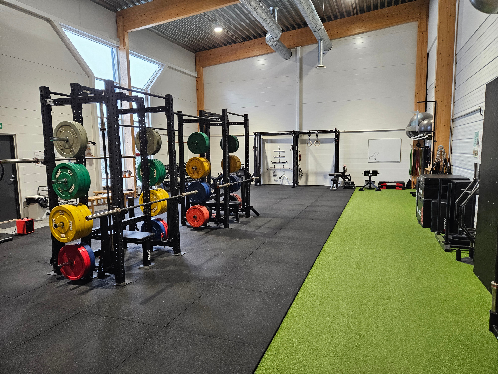

Developed a comprehensive Gym Management System that automates the administrative workflow of a fitness facility. This project followed the full Software Development Life Cycle (SDLC), moving from initial requirements gathering to final automated testing.
View this project on my GitHub via the Contact Page.
Technical Stack
Languages: Python
Frameworks: Pytest (Testing), OOP
Tools: Trello (Scrum/Agile), Figma (UI/UX), UML modeling